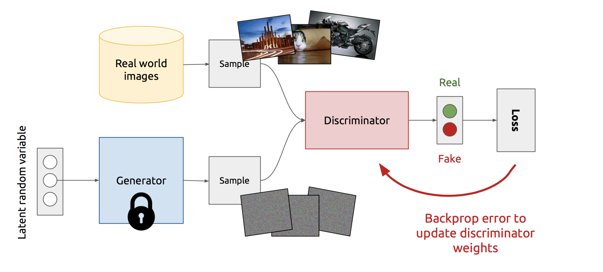
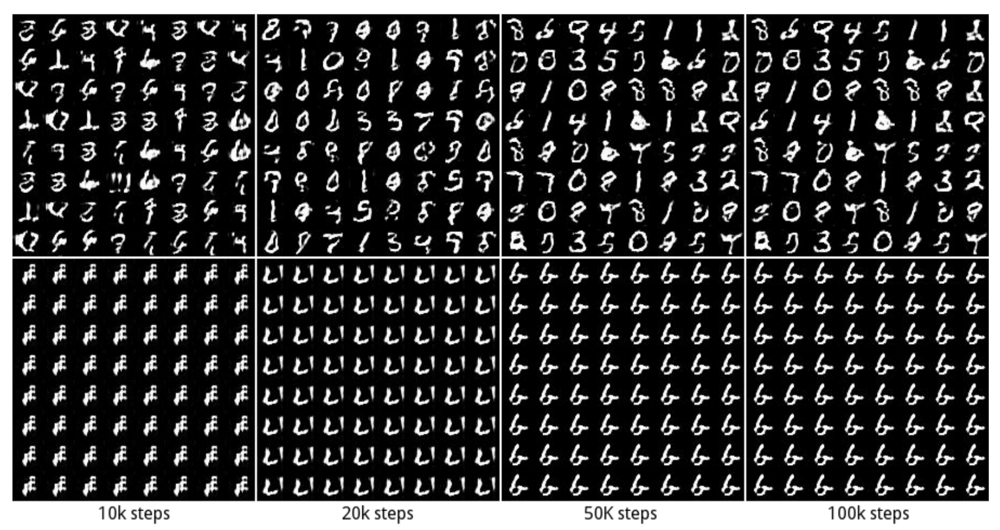
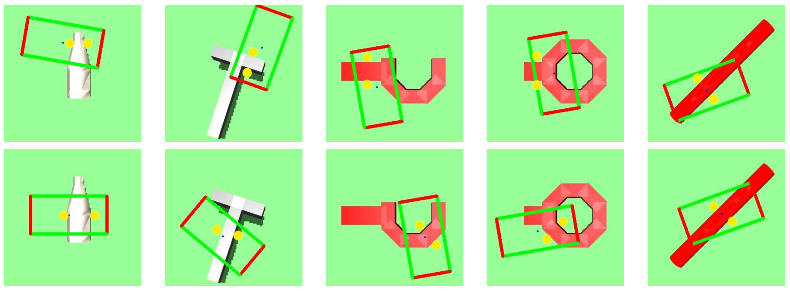

Generative Adversarial Networks and its Applications
Created by Jiali Duan (Guest Lecture) on March.1st, 2019 2nd year PhD at USC, supervised by C.-C. Jay Kuo
Research Interests
- Generative Adversarial Learning
- Deep Reinforcement Learning
Outline
- Introduction of Generative Adversarial Networks
- Applications of GAN in Computer Vision
- Research Topics in GAN
- My Research Overlap with GANs
- The End
What's Generative Adversarial Networks
A Counterfeiter-police game between two components: generator and discriminator
- G: counterfeiter, to fool police with fake currency
- D: police, to detect the counterfeit currency
Competition drives both to improve, until counterfeits are indistinguishable from genuine currency
Input/Output of GAN
- A generator takes a random vector as input and outputs a synthetic image
- A discriminator takes an image (either real or synthetic) as input and outputs real/fake
Mathematical Formulation
A min-max game between generator G and discriminator D
$ min_{G}max_{D}V =E_{x\sim p_{data}(x)}[logD(x)] + E_{z\sim p_{z}(z)}[log(1-D(G(z)))]$
- $max_{D}V(D) = E_{x\sim p_{data}(x)}[logD(x)] + E_{z\sim p_{z}(z)}[log(1-D(G(z)))]$
- $min_{G}V(G) = E_{z\sim p_{z}(z)}[log(1-D(G(z)))]$
Intuitively
- optimize D to: distinguish synthetic and real images
- optimize G to: fool the discriminator best
Why GANs?
- No formula for $p_{data}(x)$. Sampling from distribution
- Robust to overfitting since G never sees $x$
- GANs are good at capturing modes of distribution
Contrast with Discriminative models
We've seen discriminative models for far
- Give image X, predict label Y
- Estimate P(Y|X)
Generative models
- Can model P(x)
- Can generate new images
Short Summary (GAN)
- GAN consists of two components: D and G
- GAN training is a dynamic process rather than a simple descent process with a fixed loss landscape
Training Schemes
Train Discriminator

Train Generator
Training algorithm
GAN sample code
What can GAN do?
Image to Image translation (CycleGAN)

Facial Expression Synthesis (GANimation)
Multi-domain translation (StarGAN)
Pose conditioned generation (PoseGAN)
Video to Video Generation (VideoGAN)

Interactive Editing (SC-FEGAN/GAN-Dissect)

3D model generation
Music Generation
Image Generation (Progressive GAN/BigGAN)
DeepFake
Research of GANs
Difficulty and Problems
- Gradient issues: Vanishing/Exploding gradients
- Objective functions: Unstable, Non-convergence
- Mode-collapse: Lack of diversity
Difficulty 1: Gradient issues
$ V(D,G) =E_{x\sim p_{data}(x)}[logD(x)] + E_{z\sim p_{z}(z)}[log(1-D(G(z)))]$
$\nabla_{\theta_{G}}V(G,D)=\nabla_{\theta_{G}}E_{z\sim p_{z}(z)}[log(1-D(G(z)))]$
Recall that:
$\nabla_{a}log(1-\sigma(a))=\frac{-\nabla_{a}\sigma (a)}{1-\sigma (a)}= \frac{-\sigma(a)(1-\sigma(a))}{1-\sigma(a)}=-\sigma(a)$
Therefore:
$\nabla_{\theta_{G}}V(G,D)=-D(G(z))=0$, when D is confident
Difficulty 1: Gradient issues
Can be proved that Nash-equilibrium of this min-max game is:
- $P_{data(x)}= P_{gen(x)}$
- $D(x)=\frac{1}{2}$
Difficulty 2: Objective Function
Optimizing $E_{z\sim p_{z}(z)}[log(1-D(G(z)))]$:
when D is optimal, minimizing the loss is equal to minimizing the JS divergence (Arjovsky & Bottou, 2017)
$L(D^{*}, g(\theta))=2JSD(P_{r}|P_{g})-2log2$
Difficulty 2: Objective Function
The JS divergence for the two distributions $P_{r}$ and $P_{g}$ is (almost) always log2 because $P_{r}$ and $P_{g}$ hardly can overlap (Arjovsky & Bottou, 2017, Theorem 2.1~2.3)
Thus, will give arise to gradient vanishing problem
Difficulty 2: Objective Function
One suggest solution is: $E_{z\sim p_{z}(z)}[-log(D(G(z)))]$
However, when D is optimal, minimizing the loss is equal to minimizing the KL divergence meanwhile maximizing the JS divergence (Arjovsky & Bottou, 2017, Theorem 2.5):
$KL(P_{g}|P_{r})-2JSD(P_{g}|P_{r})$
Difficulty 2: Objective Function
$KL(P_{g}|P_{r})-2JSD(P_{g}|P_{r})$
Note that KL and JSD have the same sign
Thus, will give rise to unstable training
Difficulty 3: Mode Missing problem

Difficulty 3: Mode Missing problem
But let’s consider one extreme case where G is trained extensively without updates to D. The generated images will converge to find the optimal image x* that fool D the most.
$x^{*}=argmax_{x}D(x)$
In this extreme, x* will be independent of z.
Short Summary
- GAN is not seeking a minimum, but equilibrium between two forces
- GAN suffers the problem of gradient issues
- GAN is hard to train because of instability
- Mode-collapse is a serious problem in GAN training
Tackle GAN Issues
- Provide Partial or Fine-Grained Guidance
- Encoder Incorporated
- Design New Optimization Functions
Provide Partial Guidance
Conditional GANs (Mirza & Osindero, 2014)
$V(D,G) = E_{x\sim p_{data}(x)}[logD(x|y)] + E_{z\sim p_{z}(z)}[log(1-D(G(z|y)))]$
Provide Partial Guidance
Improved GAN (Salimans et al., 2016)
- $|| E_{x\sim p_{data}(x)}f(x) - E_{z\sim p_{z}(z)}f(G(z))||_{2}$
- Minibatch-training
Provide Partial Guidance
iGAN (Zhu et al., 2016)
Provide Partial Guidance
Pix2pix (Isola et al., 2017)
Provide Partial Guidance
Pix2pix (Isola et al., 2017)
Provide Partial Guidance
Pix2pix (Isola et al., 2017)
Provide Fine-grained Guidance
LAPGAN (Denton et al., 2015)
- Not end-to-end
Provide Fine-grained Guidance
Matching-aware Discriminator (Reed et al., 2016)
Provide Fine-grained Guidance
Matching-aware Discriminator (Reed et al., 2016)
- $\hat{x} = G(z,h)$, generated image
- $s_{r} = D(x,h)$, {real image, right text}
- $s_{z} = D(x,\hat{h})$, {real image, wrong text}
- $s_{f} = D(\hat{x}, h)$, {fake image, wrong text}
$L_{D} = log(s_{r}) + (log(1-s_{z}) + log(1-s_{f}))/2$
Provide Fine-grained Guidance
StackGAN (Zhang et al., 2016)
Provide Fine-grained Guidance
StackGAN (Zhang et al., 2016)
- Multi-stage training
Architecture Design
DCGAN (Radford et al., 2016)
Architecture Design
DCGAN (Radford et al., 2016)
- Replace pooling to strided-convolution in D and fractional-strided conv in G
- Use BatchNorm in both
- Remove fc layers
- Use ReLU for all except output (use Tanh) in G, use LeakyReLU for D
Architecture Design
DCGAN (Radford et al., 2016)
Architecture Design
pix2pix (Isola et al., 2017)
Architecture Design
GP-GAN (Wu et al., 2017)
Tackle Mode Missing
Illustrations
Tackle Mode Missing
Symptoms
- Imbalanced modes lead to lack of diversity
- Instability
Tackle Mode Missing
Reasons
$min_{G}max_{D} \neq max_{D}min_{G}$
- D in inner loop: convergence to correct distribution
- G in inner loop: place all mass on most likely point
Tackle Mode Missing
Mode Regularized GANs (Che et al., 2017)
Add an additional Encoder to:
- “enforce” $P_{r}$ and $P_{g}$ overlap
- “build a bridge” between fake data and real data
The end result is: fake data becomes harder to recognize
Tackle Mode Missing
Mode Regularized GANs (Che et al., 2017)
- G: $E_{z\sim p_{z}(z)}[-log(D(G(z)))] + E_{x\sim p_{data}}[\lambda_{1}d(x,G\circ E(x)) + \lambda_{2}logD(G\circ E(x))]$
- E: $E_{x\sim p_{data}}[\lambda_{1}d(x,G\circ E(x)) + \lambda_{2}logD(G\circ E(x))]$
- D: same as vanilla GAN
Tackle Mode Missing
Mode Regularized GANs (Che et al., 2017)
Also proposed Manifold-Diffusion GANs (MDGAN)
- Manifold step: Try to match the generation manifold and real data manifold
- Diffusion step: Try to distribute the probability mass on the generation manifold fairly according to the real data distribution
Tackle Mode Missing
Mode Regularized GANs (Che et al., 2017)
Tackle Mode Missing
Energy-based GANs (Zhao et al., 2017)
Digression: Another view of GAN
$ V(D,G) = E_{x\sim p_{data}(x)}[logD(x)] + E_{z\sim p_{z}(z)}[log(1-D(G(z)))]$
$ V(D,G) = E_{x\sim p_{data}(x)}[log(1-D(x))] + E_{z\sim p_{z}(z)}[logD(G(z))]$
Fake =1, Real =0
Tackle Mode Missing
Energy-based GANs (Zhao et al., 2017)
Modified Game Plans
- Generator will try to fake samples with low values
- Discriminator will try to assign high scores to fake
$D^{*} = argmin_{D}E_{x\sim p_{data}(x)}[log(1-D(x))] + E_{z\sim p_{z}(z)}[logD(G(z))]$
Tackle Mode Missing
Energy-based GANs (Zhao et al., 2017)
$D(x)=||Dec(Enc(x))-x||_{MSE}$
Review Mode Missing Problem
DiscoGAN (Kim et al., 2017)
Review Mode Missing Problem
CycleGAN (Zhu et al., 2017)/DualGAN (Yi et al., 2017)
Review Mode Missing Problem
CycleGAN (Zhu et al., 2017)
Design Objective Function
Wasserstein GANs (Arjovsky et al., 2017)
Wasserstein-1 Distance (Earth-Mover Distance):
$W(P_{r},P_{g})=inf_{\gamma \sim \Pi (P_{r},P_{g})}E_{(x,y)\sim \gamma}||x-y||$
Why is it superior than KL or JS Divergence?
Design Objective Function
Wasserstein GANs (Arjovsky et al., 2017)
$W(P_{r},P_{g})=inf_{\gamma \sim \Pi (P_{r},P_{g})}E_{(x,y)\sim \gamma}||x-y||$
Intuitively, $\gamma(x,y)$ indicates how much "mass" must be transported from x to y in order to transform the distribution from $P_{r}$ to $P_{g}$
Design Objective Function
Wasserstein GANs (Arjovsky et al., 2017)
Design Objective Function
Wasserstein GANs (Arjovsky et al., 2017)
Continuous and everywhere differentiable
Design Objective Function
Wasserstein GANs (Arjovsky et al., 2017)
By applying the Kantorovich-Rubinstein duality (Villani, 2008), Wasserstein GANs becomes:
$min_{G}max_{D} E_{x\sim P_{r}}[D(x)] - E_{\hat{x}\sim P_{g}}[D(\hat{x})]$
Design Objective Function
Wasserstein GANs (Arjovsky et al., 2017)
$min_{G}max_{D} E_{x\sim P_{r}}[D(x)] - E_{\hat{x}\sim P_{g}}[D(\hat{x})]$
However, above equation requires that D must satisfy 1-Lipschitz continuity:
$|f(x_{1})-f(x_{2})|\leq K|x_{1}-x_{2}|$
To satisfy this, WGAN enforces the weights of D to lie in a compact space [-c,c]
Design Objective Function
Wasserstein GANs (Arjovsky et al., 2017)
WGAN removes sigmoid layer in D, because it's regression now!

Design Objective Function
Wasserstein GANs (Arjovsky et al., 2017)
Design Objective Function
Wasserstein GANs (Arjovsky et al., 2017)
Short Summary
- Have discussed how to provide partial or fine-grained guidance
- Some mode-collapse solutions
- Loss function design is important
- GAN research is math-oriented
What have I done with GANs?
- PortraitGAN for Portrait Manipulation
- Robust Adversarial Robotic Grasping
Portrait Manipulation
PortraitGAN (Duan et al., 2018)
Motivation
- Simultaneous expression and style transfer
- Interactive manipulation "in the wild"
- Enforce texture consitency constraint
- High resolution generation (512x512)
- Use One generator for multi-domain translation
Portrait Manipulation
PortraitGAN (Duan et al., 2018)
Portrait Manipulation
PortraitGAN (Duan et al., 2018)

Portrait Manipulation
PortraitGAN (Duan et al., 2018)
Robust Adversarial Grasping
Robot Learning via Human Adversarial Games (Duan et al., 2019)
System Overview
- Train robot grasping policy with adversarial learning
- First paper to explore and compare simulated adversary vs human adversary
- Build an interactive physical interaction engine
- One-step reinforcement learning framework
- Verified two hypothesis with 25 users
Robust Adversarial Grasping
Robot Learning via Human Adversarial Games (Duan et al., 2019)
$r=R^{R}(s,a^{R},s^{+})-\alpha R^{H}(s^{+},a^{H},s^{++})$
Robust Adversarial Grasping
Robot Learning via Human Adversarial Games (Duan et al., 2019)

Robust Adversarial Grasping
Robot Learning via Human Adversarial Games (Duan et al., 2019)
Robust Adversarial Grasping
Robot Learning via Human Adversarial Games (Duan et al., 2019)

https://github.com/davidsonic/Interactive-mujoco_py
THE END
- GAN is a milestone in computer vision
- GAN is a fun and fast-developing research field

Acknowledgement
Many thanks to Prof. Keith Chugg, Brandon Franzke, C.-C.Jay Kuo, Stefanos Nikolaidis
Courtesy to all authors mentioned in the slides: Ian Goodfellow, Yanran Li, Binglin, Shashank, Bhargav, Jon Krohn, Francois Chollet. etc.